NOTE: This file has been formatted with the text on the left side of the page and the scanned page on the right. You should be able to copy text from the left column and paste it into word processor.
This pamphlet is printed and distributed by the Watchtower. However, many Jehovah's Witnesses have never seen this brochure. Please pay close attention to page 9. The 1998 Yearbook, pages 44-45, informs us of the following:
Many in the world recognize Jehovah’s Witnesses as lawabiding, family-oriented people who have high moral and ethical standards and who are actively preaching the message of God’s Word. However, there are also people who oppose our work and will stop at nothing to besmirch the reputation of Jehovah’s people and to hinder our efforts to let the light shine. They do this by providing government officials and the media with inaccurate, lying, and disparaging information about Jehovah’s Witnesses. In an effort to correct such misrepresentation, in February 1997 the Governing Body approved the formation, under the oversight of the Writing Committee, of a Public Affairs Office. General information desks have been functioning in the Society’s branch offices.
Disaster Relief
One way that we publicly demonstrate goodwill toward our neighbors is by our active involvement in relief efforts during times of disaster. For example, for people in the Democratic Republic of Congo (formerly Zaire), a team, all of whom are Jehovah’s Witnesses, organized humanitarian aid in 1997. With the help of thousands of Jehovah’s Witnesses in Belgium, France, and Switzerland, refugees were supplied with tons of food, clothing, vitamin products, and medicine, as well as 18,500 pairs of shoes and 1,000 blankets, all of which was airlifted to Africa. The value of the supplies provided totaled nearly $1 million (U.S.). These supplies were sent primarily as a gift to Jehovah’s Witnesses, but they were also shared with others.—Gal. 6:10.
The France branch was assisted in the preparation of a brochure containing details about this activity. The brochure was distributed to government officials and members of the news media, acquainting them with examples of what Jehovah’s Witnesses were doing in a positive and practical way to provide assistance to people in need. A number of officials expressed sincere appreciation for this information. They were impressed especially by what was done to ensure that the supplies would be received by those in need and would be distributed in an equitable manner.
MISSION TO AFRICA
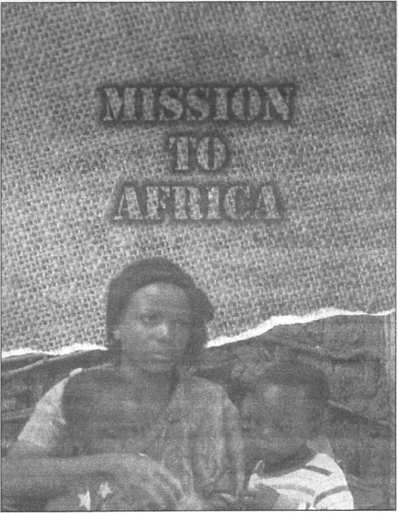SUPPLIES
SENT TO ZAIRE
April-May 1997
3 Observers
2 Doctors
1 Nurse
End of April.
From Belgium:
500 kg of medicine
1,000 blankets
3 tons of clothing
10 tons of vitamin products
End of May.
From France:
6,020 cartons of clothing totaling 90 tons
630 cartons of shoes (18,500 pairs)
Total: 6,650 cartons or 530 cubic meters
20 tons of food (13 tons of rice and 7 tons of beans)
Cost of the operation up to the end of May 1997:
4.5 million French Francs [820,000 US dollars]
sjhk SENT TO ZASS Apns-May 1W7
Manpnwrr
3 Cto«Tvtri
T, ftxton
I Mutw
Re Ue! AW
tfld Of April.
From Be:<ruiH7
bw Ksc. oi
LJOOO btthluH
3 WOi OT CEOtliltQ rl tom of 'cr tiroiti phcdu-sH
Entf ol May.
From Fiance:
o.<i?o canmi a! tJothlng irxattng Wtons
6Sh cartqmi o! shoes
Tk*I: 6.650 «ri oris cj SJO titbit Mtm
J10 tEKU of fc*i 113 ions, of rfce tr<f 7 ions of boansj
Cwt c! the operitwh irp. t* the met al Miy iQWi
4$ oilllto*1- ftsfleb Hnn jmWO US ddlanl
Television news cameras have brought into our living rooms pictures of the terrible aftermath of the 1994 genocide in Rwanda. The looks of hopelessness and despair on the faces of refugees have haunted us. In the pages of our newspapers, we read of the desperate pleas for help. Uvira, Bukavu, Kisangani, Kivu. These names had become synonymous with fear and death. Many may have felt helpless, believing that no individual efforts could alleviate such massive suffering. However, others believed differently. And their efforts are continuing to reap many benefits.
Television news cameras have brought into our living rooms pictures of the terrible aftermath of the 1994 genocide in Rwanda. The looks of hopelessness and despair on the faces of refugees have haunted us. In the pages of our newspapers, we read of the desperate pleas for help. Uvira, Bukavu, Kisangani, Kivu. These names had become synonymous with fear and death. Many may have felt helpless, believing that no individual efforts could alleviate such massive suffering. However, others believed differently. And their efforts are continuing to reap many benefits.
In the summer of 1994, Claude Hamel, a company owner from France in his fifties, and president of Aidafrique, a French humanitarian association, led a team of volunteers to set up well-organized camps and field hospitals for the Rwandan refugees in Zaire.*
By the end of their trip, more than 7,000 persons-three times the number of Jehovah' s Witnesses in Rwanda-benefited from the help of the relief. However, Zaire itself soon became a land of peril. So, from April 28 to May 12, 1997, Claude brought a relief team together once again. He and his wife, Joseline, Louis de Wit of Belgium, Pierre Baudry of France, and Dr. Anton Camprubi of Switzerland left their countries to help alleviate the suffering of the Zairian people.
The team, all of whom are Jehovah' s Witnesses, wanted to supply humanitarian aid. With the help of thousands of Jehovah' s Witnesses in Belgium, France, and Switzerland they supplied the refugees with a total of 500 kg of medicine, 10 tons of vitamin products, 20 tons of food, more than 90 tons of clothing, 18,500 pairs of shoes, and
* The country' s name has been changed to Democratic Republic of Congo. Since the team of volunteers entered the country prior to the change, references to the country will reflect the former name.
In the summer of 1W4, Claude Hamel, a company owner from France in his fifties, and president of Aidafrlque, a French humanitarian association, led a team of volunteers to set up well-organized camps and field hospitals for ihe Rwandan refugees in Zaire,"
By the end of their trip, more than 7,OGO persons—-three times the number of Jehovah’s Witnesses in Rwanda—benefited from [he help of the relief. However, Zaire itself soon became a land of peril. So, 4 from April 28 to May 12. 1097, Claude brought a relief team together “ once again. He and his wife, fosehne, Louis de Wit of Belgium. Pierre Baudry of France, and Dr. Anton Camprut! of Switzerland left their countries to help alleviate the suffering of the Zairian people.
The team, all of whom are Jehovah’s Witnesses, wanted to supply humanitarian aid. with the help of thousands of Jehovah's Witness es in Belgium, France, and Switzerland they supplied the refugees with a total of 500 kg of medicine. 10 tons of vitamin products, 20 tons of food, more than 90 tons of clothing, IB, 500 pairs of shoes, and
‘The wuntrsS rum hai been chtnita ro OnnixHtlc ftepjUJc of Ccngo. Since tie ci vdwwrt entered ihe counity prior to the ctangc. rtfewhtes to the CRifttry will it&ect rfw farmer namt.
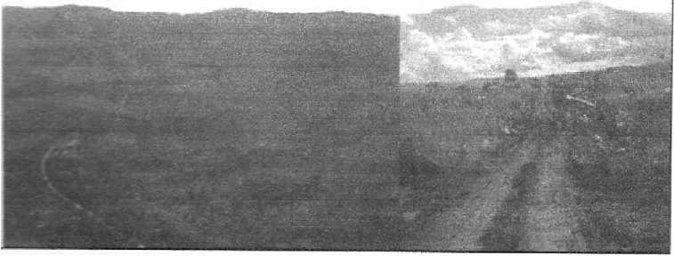1,000 blankets. The cost of the supplies totaled 4.5 million French francs or nearly $1 million (U.S.). We invite you to join the relief team by reading the following personal accounts of their work.
We arrived in Goma, which was the center of our activities in 1994. Claude and Joseline, "African veterans," and the backbone of the humanitarian action, explored the city and the surrounding areas of Rutshuru, Masisi, Uvira, Kalemie, Moba, Kabalo. In addition, Claude sent out messengers to obtain reports from Butembo and Bunia. We also received information from Kisangani, situated about 1,000 km [620 miles] from Goma. In Goma, we were taken aback by an impression of calm. Rubble, deformed and broken roads, testified however to the recent war.
In Goma, 95% of the inhabitants are unemployed. The few humanitarian organizations employ some Zairians as drivers or porters. In the hotels, some work without being paid in the hope of keeping their job when the money comes back. The people lack everything: clothing, shoes, medicine and especially food. Hunger follows the war, with ruined crops, food reserves looted, and the very high prices for the food still available.
l.OOG blankets. The cost of the supplies totaled 4.5 million French francs or nearly $1 million (U.S.?. We invite you to join the relief team by reading the following personal accounts of their work.
We arrived in Goma, which was the center of our activities in 1994. Claude and Joselinc. "African veterans," and the backbone of the humanitarian action, explored the city and the surrounding areas of Rurshuru, Masisi, Uvira. Kalemie, Me ba, Kabaio. In addition, Claude sent out messengers to obtain reports from Burembo and Bunta. We also received information from Kisangani, situated about I,MO km ~
|62O miles’ from Goma. In Goma, we were taken aback bv an impression of calm. Rubble, deformed and broken roads, testified however to rhe recent war.
In Goma. 95% of the inhabitants are manitarian organisations employ some Zairians as drivers or porters. In rhe hotels, some work without being paid in the hope of keeping their job when the money comes back. The people lack everything: clothing, shoes, medicine and especially food. Hunger loiiows the war, with ruined crops, food reserves looted, and the very high prices for rhe food still available.
unemployed. The few hu
In Kisangani, at the beginning of May, a kilogram [2.2 pounds] of potatoes cost about three dollars. Poor people cannot buy them. At best, the people eat one meal per day in the evening. All day long, children and adults drink just one or two cups of tea. The daily anxiety is to obtain some meager pittance. The area of Kisangani, scene of more dramatic events recently, appeared more unstable and dangerous. One clear sign of hope was the resumption of crop sowing in Bunia and Butembo.
The scars of the war-rape and the loss of human life-are greatly felt by the Zairians. Some were caught up in battles with which they had nothing to do. Others were killed by stray bullets. Others died because they belonged to a particular tribe, or were mistaken for opponents of one or the other camps. In the Kivu region, the Bembes and the Hutus are still in hiding. To get away from the combat zone, whole groups traveled almost 1,200 km [750 miles] by foot in the jungle.
Many children have lost their parents and some have even seen them die. For example, in one family, the father died of cholera and
In Kisangani, at the beginning of May, a kilogram [2.2 pounds) of potatoes cost about three dollars. Poor people cannot buy them. At best, the people eat one meal per day in the evening. All day long, children ano adults drink just one or two cups of tea. The daily anxi ety is to obtain some meager pittance. The area of Kisangani, scene of more dramatic events recently, appeared more unstable and dangerous. One clear sign of hope was the resumption of crop sowing in Bunia and Butembo.
6
The Scars of warfare-Everywnere
The scars of the war—rape and the loss of human life—are greatly felt by the Zairians. Some were caught up in battles with which they had nothing to do. Others were killed by stray bullets. Others died because they belonged to a particular tribe, or were mistaken for opponents of one or the other camps, in the Kivu region, the Bembes and the Hutus are still in hiding. To get away from the combat zone, whole groups traveled almost 1,200 km [750 miles} by foot in the jungle.
Many children have lost their parents and some have even seen them die. For example, in one family, the father died of cholera and
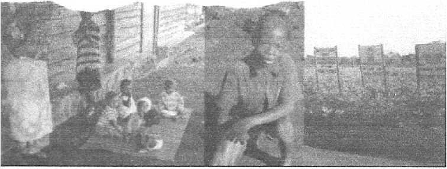the mother disappeared when the boat she was in was attacked and sank. Now, these five orphans are looked after by their grandparents or by the already destitute community. What hopelessness!
We recognized the destruction that armies have always caused. In the Moba region, the village of Kasenge, where 150 Jehovah' s Witnesses lived, was completely destroyed. In Beni, Rutshuru and KanyaBayonga, dozens of houses and Kingdom Halls (the name of the religious meeting places of Jehovah' s Witnesses) were burnt. Deprived of their homes, their possessions and all means of existence, these people fled to join the urban masses, already reduced to extreme poverty.
Famine follows war. Disease follows famine. Malnutrition wreaks havoc particularly in children. Poor nutrition causes serious gastric problems or dysentery. Health conditions vary from area to area. Malaria is rampant. In Kalemie, cholera is widespread. Already endemic in Zaire, it experiences an upsurge following war.
This is the assessment that we were able to make with the help of the relief committees established by Jehovah' s Witnesses on a local level at the start of hostilities. Having assessed the needs, we were able to adapt our help to the actual conditions and act in a number of ways.
•ne mother disappeared when the host she was in was attacked and sank. Now, these five orphans arc looked after by their grandparents or by the already destitute community. What hopelessness]
We recognized the destruction that armies have always causedin the Mcba region, the village of Kasenge, where 150 Jehovah’s Wit cesses lived, was completely destroyed, in Beni, Rtrtshuru and Kanya Bayonga, dozens of houses and Kingdom Halls (the name of the cell glous meeting places of Jehovah’s Witnesses) were burnt. Deprived of their homes, their possessions and ail means of existence, these people (led to join the urban masses, already reduced to extreme poverty,
Famine follows war. Disease follows famine. Malnutrition wreaks havoc particularly in children. Poor nutrition causes serious gastric problems or dysentery. Health conditions vary from area to area. Ma laria is rampant, in Kalemie, cholera is widespread. Already endemic In Zaire, il experiences an upsurge following wan
This is the assessment that we were able to make "with the help of the relief committees established by Jehovah’s Witnesses on a local level at the start of hostilities. Having assessed the needs, we were able to adapt our help to the actual conditions and act in a number of ways.
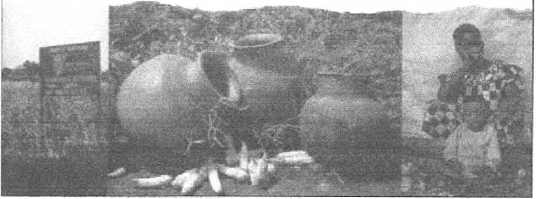Immediately, we took emergency -action. We brought money and medicine, and purchased food, though in limited quantity. More than thirteen tons of help (medicine, blankets, vitamin products) were sent to Kigali, Rwanda, from Belgium and now wait to cross the border to be distributed. We organized the distribution of what we had. In Goma, this took place at the Kingdom Hall. Just as in the past, care was given to cholera victims. People received rice, beans and oil according to the size of their family.
Waiting was sometimes long. More often than not, it was the women who waited, sitting on the black pumice floor in their brightly-colored garments. They protected themselves from the intense sun under red, yellow or blue umbrellas. Sometimes, with their beautiful voices they would sing hymns. They spoke to Joseline, about their problems-of the too-frequent pregnancies that they do not know how to prevent. The distribution of food completed, we watched emotionally as the last woman leftbeautiful, upright, her child wrapped in her garment on her back. She departed with a large packet of rice in the shape of a pumpkin on her head, a yellow tin containing three liters
immediately, we took emergency action. We brought money and medicine, and purchased food, though in limited quantity. More than thirteen tons of help medicine, blankets, vitamin products) were sent to Kigali, Rwanda, from Belgium and now wait to cross the border to be distributed. We organized the distribution of what we had, in Goma, this took place at the Kingdom Hall. Just as in the past, care g was given to cholera victims. People received rice, beans and oil ac " cording to the size of their family.
Watting was sometimes tong. More often than not, it was the women who waited, sitting on the black pumice floor in their brightly-colored garments. They protected themselves from the intense sun under red, yellow or blue umbrellas. Sometimes, with their beautiful voices they would sing hymns. They spoke to Joseiine, about their problems—of the too-frequent pregnancies that they do not know how to prevent. The distribution of food completed, we watched emotionally as the last woman left—beautiful, upright, her child wrapped in her garment on her back. She departed with a large packet of rice in the shape of a pumpkin on her head, a yellow tin containing three liters

of oil in one hand, a blue bucket filled with a few precious goods in the other.
Anton, a young Swiss doctor, and Pierre, a graying French nurse, give essential medical help. Anton examines the sick either in private homes, such as the hotel waiter' s home, or more often in the Kingdom Hall. Over a period of five days, he gave 400 consultations. For this also, the wait was long. The many children show what for us Europeans is remarkable patience. We have the needed medicine to treat common infections and money donated by the assemblies of Jehovah' s Witnesses from Belgium, France and Switzerland to have more thorough care carried out. One example highlights the terrible consequences of our friends' destitute state. One man broke his leg. Nobody had the money for him to be treated so he went without treatment. When we were finally able to give the necessary money, the leg was infected and had to be amputated.
Our activity was often hindered by difficulties particular to the region. Distances are vast and lines of communication almost nonexistent. The best form of travel, if not the only one, is the airplane. Often we used the H.C.R.' s (United Nations High Commission for Refugees) planes. Administrative formalities also held us up. Just getting a
of oil in one hand, a blue bucket tilted with a tew precious goods in rhe other.
Anton, a young Swiss donor, and Pierre, a graying French nurse, give essential medical help. Anton examines the sick either in private homes, such as the hotel waiter s home, or more often in the Kingdom Hail. Over a period ol five days, he gave 400 consultations. For this also, the watt was tong. The many children show what for us Euro peans is remarkabie patience. We have the needed medicine to treat common infections and money donated by the assemblies of Jehovah's Witnesses from Belgium, France and Switzerland to have more thorough care carried out- One exampie highlights the terrible const quences of our friends’ destitute state. One man broke his leg. Nobody had the money for him to be treated so he went without treatment. When we were finally able to give the necessary money, the leg was infected and had to be amputated.
~^~~~^wOur activity was often hindered by difilculttes particular to The region. Distances are vast and lines of communication almost nonexistent. The best form of travel, if not the only one, is rhe airplane, Often we used the H.CR.’s jUnited Nations High Commission for Refu gees! planes. Administrative formalities also held us up. Just getting a
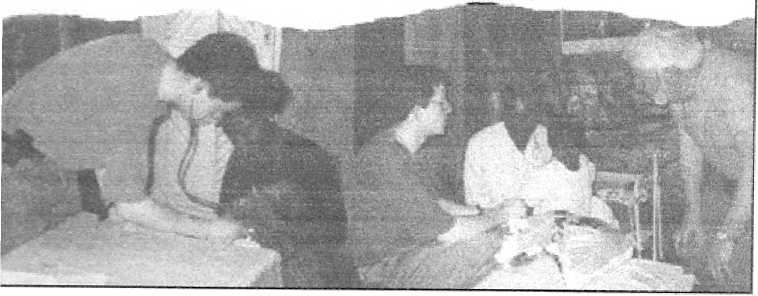pass to go from one town to the next was quite a business. It was only granted for a limited period. The dispatching of our cargo suffered delays which the urgency of the situation made painful. However, we did not come up against an uncooperative spirit in our area. Once we convinced the authorities of the purely voluntary nature of our mission, they were quite cooperative. Claude met a senior official for the region' s security. Interested in our activity he facilitated our work.
On May 12, we all met up in Kigali for a meeting of African (Rwandan and Zairian) relief committee members and the European (Belgium, French and Swiss) representatives. Together they assessed what had been done. They also drew useful conclusions from the inquiry conducted at the grass-roots level. Medicine needs to be imported. Apart from exceptional circumstances, there is a need to supply the population with food that they normally eat. The Butembo region produces rice and beans, and it is easier to get the necessary money to buy and deliver them, than to transport food from Europe. Medicine and clothing should be distributed to local institutions (orphanages or non-governmental organizations).
pass to go from one town to the next was quite a business, ft was only grantee Cor a limited period. The dispatching of our cargo suffered delays which the urgency of rhe situation made painful. However, we did not come up against an uncooperative spirit in our area. Once we convinced the authorities of the purely voluntary nature of our mis sion, they were quite cooperative. Claude met a senior official for the region’s security. Interested in our activity he facilitated our work.
10 Planning for the Future
On May 12, we all met up in Kigali for a meeting of African (ft wand an and Zairian | relief committee members and the European (Belgium, French and Swiss! representatives. Together they assessed what had been done. They also drew useful conclusions from the in quiry conducted at the grass-roots level. Medicine needs to be imported. Apart from exceptional circumstances, there is a need to supply the population with food that they normally eat. The Butembo region pro duces rice and beans, and it is easier to get the necessary money !o buy and deliver them, than to transport food from Europe. Medicine and clothing should be distributed to local institutions lorphanages or nongovernmental organizations).
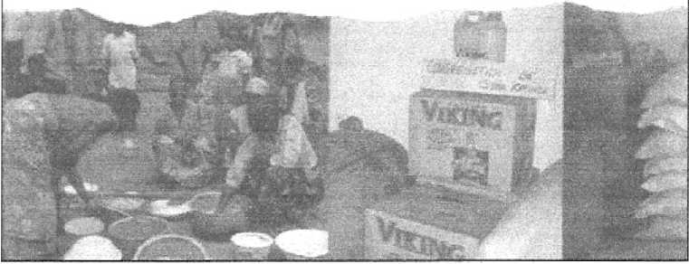The same principles apply to individuals. Cholera was rampant in Kalemie. A qualified nurse from Bukavu was without work. We invited him to join us. So, we decided to get the help of local unemployed medical personnel. To achieve this, local committees will seek out nurses without work at the congregations of Jehovah' s Witnesses and invite them to give their help.
The appraisal of our humanitarian action would be incomplete without mentioning and assessing the specific needs of another "front" involving first aid. It is in a totally different context that Loic Domalain, a French Jehovah' s Witness doctor, has been working in the east of Africa since May 3. He has been visiting refugee camps established in Tanzania (a neighboring country of Zaire), for persons who fled from the war. Even in a 4x4, access was difficult. Tracks are bad and a storm is all it takes to make them unnavigable. To travel, transport medicine or use a stethoscope, many authorizations are needed. 44,000 persons, including 500 Jehovah' s Witnesses, their children and family, live in Nyarogoso. Each day, 15 people die in the camp. Lung and intestinal problems, dysentery and malaria favored by the rainy season and stagnant water affect the malnourished population. Loic gave 245 consultations in three days. In the second camp-Mutabira
The wine principles apply to individuals. Cholera was rampant in Kalemie- A qualified nurse from Bukavu was without work. We invited him to join us. So, we cecided to get the help of local unemployed medical personnel. To achieve this, local committees will seek out nurses without work at the congregations of Jehovah's Witnesses and invite them to give their help.
The appraisal of our humanitarian action would be incomplete without mentioning and assessing the specific needs of another ‘•front’’ involving first aid. It is in a totally different context that Lo'fc Dorna-lain. a French Jehovah’s Witness doctor, has been working in the east of Africa since May 3. He has been visiting refugee camps established in Tanzania la neighboring country of Zaire}, for persons who Bed from the war. £ven in a 4x4. access was difficult. Tracks are bad and a stotm is ail It takes to make them unsavigable. To travel, transport medicine or use a stethoscope, many authorizations are needed. 44,000 persons, including 500 Jehovah’s Witnesses, their children and family, live tn Nyarogoso, Eacfc day, 15 people die in the camp. Lung and intestinal problems, dysentery and malaria favored by the rainy season and stagnant water affect the malnourished population, bole gave 345 consultations in three days. In the second camp—Mutabira
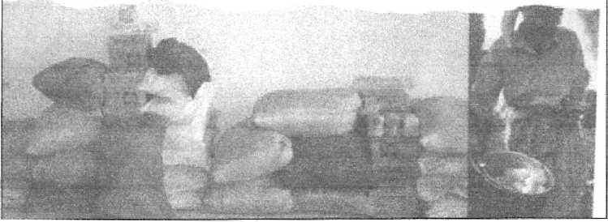there are 72 Rwandan Witnesses. Dysentery and amebiasis are common there. In Lugufu, there are 47,000 persons including 80 Witnesses. Amebic dysentery is rife. The doctor made up a list of the most destitute children.
In each camp, he assessed the urgent needs. Some means to sterilize the water would be very useful. In each camp there is a pressing need for clothing, shoes and blankets. Zaire is in need too. Our immediate efforts would concentrate on this. We had already informed our friends in Europe. Now it was time for them to react.
And what a reaction! No sooner had we got back, than the Jehovah' s Witnesses invited Claude and Joseline to the office of Jehovah' s witnesses at Louviers, to show them what they were sending to Zaire. Alerted by our initial messages, they had sounded out the call in local congregations in the Rhone valley, Normandy, and in part of the Paris area. Can you give clothing and shoes? Many seized this occasion to give with joy. Bagfuls poured into the Kingdom Halls. Their contents, folded or boxed, were transported to Louviers and off-loaded into the warehouse of the Association of Jehovah' s Witnesses. Four hundred volunteers decided to devote a part of their three-day Whitsun weekend to the "Help Zaire" operation.
—there are 72 Rwandan Witnesses. Dysentery and amebiasis are coin mon there. In Lugnfu, there are 47,000 persons including 80 Witnesses. Amebic dysentery is rife. The doctor made up a list of the most destitute children.
In each camp, he assessed the urgent needs. Some means to ster ilize the water would be very useful. In each camp there is a pressing need lor clothing, shoes and blankets. Zaire is in need loo. Our imme diate efforts would concentrate on this. We hac already informed our friends In Europe. Now it was time for them to react.
And what a reaction! No sooner had we got hack, than the Jefic vah’s Witnesses invited Claude and Joseline to the office of Jehovah's witnesses at Louviers, to show them what they were sending to Zaire. Alerted by our initial messages, they had sounded out the call in local congregations in the Rhone valley, Normandy, and in part of rhe Paris area. Can you give clothing and shoes? Many seized this occasion to give with |oy. Bagfuls poured into the Kingdom Halls. Their contents, folded or boxed, were transported to Louviers and off-loaded into the warehouse of the Association of Jehovah's Witnesses. Four hundred volunteers decided to devote a part of their three-day Whitsun weekend to the ‘Help Zaire" operation.
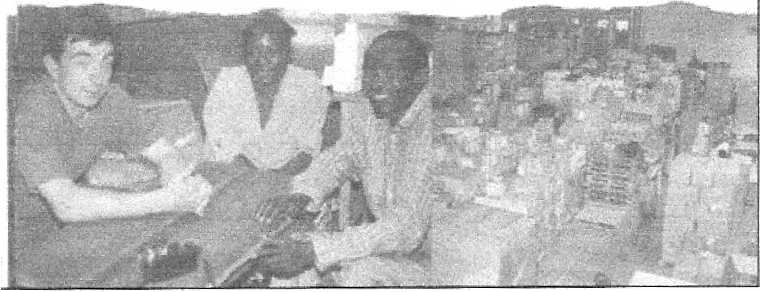Volunteers of all ages positioned themselves behind very long parallel tables. On the other side of the tables, others-brought the boxes that were handed to them on trolleys. The boxes were emptied. Then women sorted them, folding the clothing into uniform boxes which were stacked thirty to a palette. Nine containers were filled which will be taken to Le Havre to be shipped and then directly transported into Zaire or via the surrounding countries-Zambia and Rwanda.
How much was prepared for shipment? A total of 90 tons, taking up 530 cubic meters, plus 20 tons of food consisting of 13 tons of rice and 7 tons of beans. There was no haste, no collisions or jostling. It was like a beehive. Joseline showed the volunteers photos taken in Zaire and hopes to show the Zairians the images of this large sorting and packaging center. A real link between the two continents could be felt-that of brotherhood and love. Something very touching happened. French children had thought about toys. Placed on a table were green, pink and blue fluffy toys, shiny cars, multi-colored spinning tops. A girl named Eloise, in a red dress and white collar, took teddy bears, dolls and a rag doll that flopped on top of the pile, out of a large bag.
Volunteers of all ages positioned themselves behind very long parallel tables. On the other side of the tables, others brought the box es that were handed to them on trolleys. The boxes were emptied. Then women sorted them, folding the clothing into uniform boxes which were stacked thirty to a palette. Nine containers were filled which will be taken to Le Havre to be shipped and then directly transported into Zaire or via the surrounding countries—Zambia and Rwanda,
How much was prepared for shipment? A total of 70 tons, tak Ing up 530 cubic meters, plus 20 tons of food consisting of 13 tons of rice and 7 tons of beans. There was no haste, no collisions or jostling. It was like a beehive. Joseline showed the volunteers photos taken in Zaire and hopes to show the Zairians the images of this large sorting and packaging center. A real link between the two continents could be telt -that of brotherhood and love. Something very touching happened. French children had thought about toys. Placed on a table were green, pink and blue fluey toys, shiny cars, multicolored spinning tops. A girl named Elmse, in a tec dress and white collar, took teddy bears, dolls and a rag doll that Hopped on top of the pile, out of a large bag.
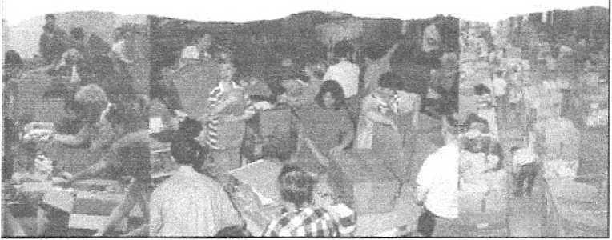Some of the toys will go to the Ndosho orphanage. We were told of this institution in Goma by an immigration officer. 85 children of varying ages, either abandoned, lost, or real orphans, live there. We visited the dilapidated buildings-work is being carried out to have better ones-but nevertheless very clean judging by the bunk beds. We liked the classroom. We saw children playing on the concrete courtyard floor. They sang lined up in front of us. We promised to supply their needs with 50 boxes of protein products, 100 blankets, 5 boxes of clothing and 20 packets containing 1,000 tablets of various medicines. We already had many of these necessary things. However, we did not have a football. The football that the young ones themselves had asked us for. We will buy one soon and will bring it to the children as soon as we return.
We plan to return to Africa. Our destination will be the Democratic Republic of Congo. What changes await us? Uncertainty, yes, but speculations about the future, or lamenting over the past, are not the most important thing for us. What is important is that we can use the present to help and comfort the victims. We have the resources and the earnest desire to do so.
Some of the toys will go to the Ndosho orphanage. We were told of this institution in Goma by an immigration officer. 85 children of varying ages, either abandoned, lost, or real orphans, live there. We visited the dilapidated buildings—work is being carried out to have better ones—but nevertheless very clean fudging by the bunk beds. We liked the classroom. We saw children playing on the concrete courtyard floor. They sang lined up in front of us. We promised to supply their needs with 50 boxes of protein products. 100 blankets, 5 boxes of clothing and 20 packets containing 1,000 tablets of various medicines. We already had many of these necessary things. However, we did not have a football. The football that the young ones them selves had asked us for. We will buy one soon and will bring ft to the children as soon as we return.
We plan to return to Africa. Our destination will be the Demo cratlc Republic of Congo. What changes await us? Uncertainty, yes, but speculations about the future, or lamenting over the past, are not the most important thing for us. What is important is that we can use the present to help and comfort the victims. We have the resources and the earnest desire to do so.
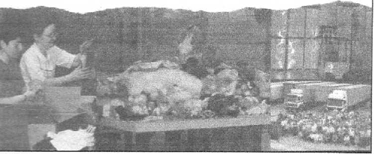The relief effort by Jehovah' s Witnesses in Europe in behalf of the Zairians is a small part of a larger work of community service that Witnesses have performed in the past century. Jehovah' s Witnesses are members of a worldwide Christian religion that has been active in Europe for about a century. Worldwide, they have helped many victims of natural disasters, hunger, famine, and war crimes.
As television news cameras continue to highlight the plight of the refugees, and as newspaper articles continue to cover the events of the effects of the war in Zaire, we confidently prepare for a new mission, stimulated by the generosity of our European companions and by love for our African friends.
The relief eSort by Jehovah's Witnesses in Europe in behalf of the Zairians Is a small pan of a larger work of community service that Witnesses have performed in the past century. Jehovah’s Witnesses are members of a worldwide Christian religion that has been active In Europe for about a century. Worldwide, they have helped many victims of natural disasters, hunger, famine, and war crimes.
As television news cameras continue to highlight the plight of the refugees, and as newspaper articles continue to cover the events of -r; the effects of the war in Zaire, we confidently prepare for a new mis sion, stimulated by the generosity of our European companions and by love for our African friends.
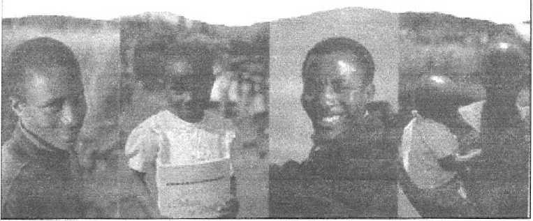NOTE: This is extra info NOT in the booklet
Other quotes from Watchtower literature concerning Jehovah' s Witnesses using United Nations airplanes or equipment:
WT-94-1-1 p.-6
A missionary writes: “Concerning our brothers who found themselves in refugee camps in Tete Province, an interesting observation was made by a representative of UNHCR (United Nations High Commissioner for Refugees.) He said that Jehovah’s Witnesses had organized their own camps, separate from other groups. ‘Their camp,’ he said, ‘was the only one that was properly run,’ adding, ‘Jehovah’s Witnesses are clean, organized, and educated.’ He then offered to take me by plane across the bush to see for myself.
Awake-2001 -7-22p.-9
One UNHCR official in the Democratic Republic of Congo was so pleased with the orderliness of the relief efforts carried out by the Witnesses that she put her vehicle at the disposal of the volunteers.
WT-2003-2-15-p.-8
We were shown where to cut trees and collect grass to use in building our own small house. We made mud bricks. The UNHCR gave us a plastic sheet that we put on the roof. It was hard work, but we were happy when our simple home was ready.”